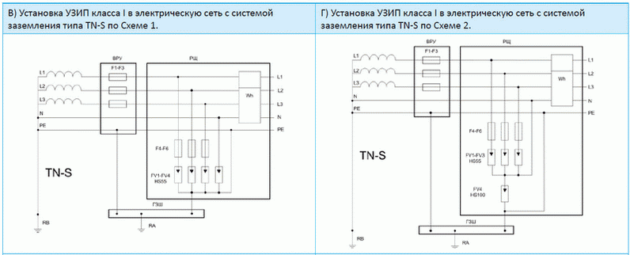

|
|
|
|
|
|

|
|
Технический бюллетень TNP007 01.07.2009 г. Применение УЗИП класса I.
Применение УЗИП класса I
Технический бюллетень в формате PDF (803 кБ)
Устройства защиты от импульсных перенапряжений (УЗИП) класса I предназначены для защиты низковольтных силовых распределительных систем до 1000 В от импульсных перенапряжений источниками которых являются:
•прямые удары молнии (ПУМ) в систему молниезащиты объекта или воздушную линию электропередач в непосредственной близости перед вводом в объект;
•межоблачные разряды или удары молнии в радиусе до нескольких километров вблизи от объектов и коммуникаций входящих и выходящих из объекта;
•коммутации индуктивных и емкостных нагрузок, короткие замыкания в распределительных электрических сетях высокого и низкого напряжения.
Основными техническими характеристиками УЗИП класса I являются:
•род тока ( переменный, постоянный);
•максимальное длительное рабочее напряжение Uc;
• импульсный ток Iimp;
• удельная энергия W/R;
•коммутируемый заряд Q;
•номинальный разрядный ток In(8/20);
• значение уровня напряжения защиты Up;
• сопровождающий ток If, для УЗИП на основе разрядников;
•максимальные рекомендованные параметры защиты от сверхтока.
Для определения способности выдерживать токовые нагрузки УЗИП класса I испытываются номинальным разрядным током In 8/20 мкс, импульсным напряжением 1,2/50 мкс и импульсным током Iimp. Испытание импульсным током Iimp определяется его параметрами: пиковым значением Ipeak и зарядом Q. Испытательный импульсный ток должен достичь значения Iimp/Q в течение 10 мкс. Типичная форма волны, при которой могут быть достигнуты параметры по Таблице 1, —это форма волны однополярного импульсного тока. Удельная энергия (W/R) рассчитывается после испытания.
В качестве испытательного импульса тока Iimp для УЗИП класса I принимается импульс тока с фронтом 10 мкс и длительностью (полупериодом) 350 мкс (импульс 10/350 мкс), что соответствует форме тока молнии по СО-153-34.21.122-2003.
В настоящее время для производства УЗИП класса I в качестве нелинейных элементов используются разрядники различных типов, оксидно-цинковые варисторы и их комбинации. Условно графические обозначения (УГО) различных нелинейных элементов приведены в Таблице 2 .
Варисторные секции УЗИП снабжаются внутренними терморасцепителями, которые срабатывают при повреждении варисторов. Индикация рабочего состояния осуществляется с помощью индикатора красного цвета, расположенного на корпусе устройства, а также с помощью дистанционной сигнализации (DS) переключением «сухих» контактов см. Таблицу 3.
К наименованию УЗИП на основе варисторов, снабженных дополнительными контактами дистанционной сигнализации добавляется индекс DS. Полный перечень УЗИП класса I выпускаемых компанией Hakel приведен в Приложении 1.
Схемы подключения УЗИП класса I
Существуют две основных схемы подключения УЗИП в низковольтных силовых распределительных системах до 1000 В (Рис.3).
Схема 1 предназначена для защиты от синфазных (продольных) перенапряжений в цепи провод-земля. УЗИП класса I должны устанавливаться после вводного аппарата защиты от сверхтока следующим образом:
• если рабочий нулевой проводник заземлен на вводе в объект или если рабочий нулевой проводник отсутствует — между незаземленными фазными проводниками и землей (L/PE);
• если рабочий нулевой проводник не заземлен на вводе в объект:
a) между каждым фазным проводником и землей (L/PE);
b) между рабочим нулевым проводником и землей (N/PE).
Схема 2 предназначена для защиты электрооборудования от противофазных (поперечных) перенапряжений в цепи провод-провод. УЗИП класса I должны устанавливаться после вводного аппарата защиты от сверхтока следующим образом:
• если рабочий нулевой проводник заземлен на вводе в объект - между незаземленными фазными проводниками и землей (L/PEN);
• если рабочий нулевой проводник не заземлен на вводе в объект:
a) между каждым фазным проводником и нулевым проводником (L/N);
b) между рабочим нулевым проводником и землей (N/PE).
• если рабочий нулевой проводник отсутствует, то УЗИП, подключаемые к незаземленными фазными проводниками соединяются в средней точке, которая в свою очередь через УЗИП (N/PE) соединяется с землей.
Из-за гальванической развязки между нулевым рабочим проводником и землей которую выполняет УЗИП в цепи N – PE подключение УЗИП по Схеме 2 обеспечивает лучшую помехозащищенность оборудования связи и обработки информации. Экспериментальные исследования и опыт эксплуатации показали, что наибольшую опасность для защищаемого оборудования составляют противофазные перенапряжения по сравнению с продольными перенапряжениями. При проектировании различных ступеней защиты возможно комбинирование Схем 1 и 2.
В Таблице 4 представлены типовые схемы подключений УЗИП класса I для сетей с различными типами систем заземления.
Таблица 4. Схемы подключения УЗИП класса I для сетей с различными типами систем заземления.

При подключение УЗИП для сети с системой заземления типа ТТ по Схеме 1 (Рис.4 А) существует вероятность возникновения опасного напряжения на корпусе электрооборудования в случае повреждения одного из УЗИП, например при коротком замыкании. Подключение УЗИП после устройства защитного отключения (УЗО) не решает проблему, так как в этом случае УЗО подвергается воздействию импульсных токов. Подключение УЗИП для сети с системой заземления типа ТT по Схеме 2 (Рис.4 Б) исключает данную вероятность.
Выбор УЗИП класса I
Система защиты оборудования от импульсных перенапряжений (внутренняя молниезащита или грозозащита) в низковольтных силовых распределительных системах до 1000 В должна обеспечить отвод импульсных токов от защищаемого оборудования без повреждения УЗИП.
Для определения пикового значения импульсного тока протекающего через УЗИП необходимо знать распределение тока при прямом ударе молнии (ПУМ) в пределах электроустановки объекта. Эмпирическая методика расчета распределения тока приведена в ГОСТ Р 51992-2002 (МЭК 61643-1-98), ПРИЛОЖЕНИЕ А. Для более точной оценки распределения тока необходимо иметь результаты измерения сопротивления системы заземления, проверки металлосвязи всех металлических коммуникаций и конструкций, системы электропитания объекта и т. д. На практике, при отсутствии этих исходных данных и руководствуясь вышеуказанной методикой, принимается что 50 % импульсного тока растекается через систему заземления объекта, а оставшиеся 50 % распределяются равномерно через систему электропитания объекта, металлические конструкции и коммуникации и т.д.
Рис. 5. Растекания тока молнии в системе электропитания: А) в случае ПУМ в систему молниезащиты объекта; Б) в случае ПУМ в воздушную линию электропередач перед вводом в объект.
Для небольших объектов или для объектов, к которым подведены коммуникации, выполненные из диэлектрических материалов, можно принять, что через УЗИП потечет половина импульсного тока (Рис. 5 А). Предполагая равномерное растекание тока молнии между системой заземления объекта и системой электропитания можно рассчитать пиковые значения импульсных токов, протекающих через УЗИП в сетях с различными типами системы заземления при различных уровнях молниезащиты (Таблица 5).

В случае ПУМ в воздушную линию электропередач непосредственно перед вводом в объект и условии равномерного растекания тока в сторону трансформаторной подстанции и системы электропитания объекта, на вводе в объект будет воздействовать импульсный ток до 25 кA (10/350 мкс) на проводник (Рис. 5 Б). При неравномерном растекания токов это значение может возрасти до 50 кА.
Выбор УЗИП класса I по импульсному току необходимо производить с запасом 20 – 30 % учитывая возможную неравномерность растекания токов по различным проводникам. Особое внимание необходимо уделить выбору УЗИП для защиты нулевого провода, так как через него может протекать ток до 100 кА (10/350 мкс).
УЗИП класса I должны обеспечивать безопасный уровень импульсных перенапряжений для электрооборудования объекта и УЗИП последующих ступеней защиты. В соответствии с ГОСТ Р 50571.19-2000 для трехфазной сети 220/380 В определен уровень выдерживаемого импульсного перенапряжения на вводе в объект в 6 кВ . УЗИП класса I производства компании HAKEL обеспечивают уровень защиты от 1,3 до 2,5 кВ.
Во время своей работы УЗИП и включенные с ними последовательно защитные устройства должны выдерживать временные перенапряжения (ВПН) UT в течение заданного промежутка времени tТ по ГОСТ Р 50571.18 вызванные:
- замыканиями на землю в электроустановках выше 1 кВ;
- обрывом нулевого проводника в электрических сетях с системами заземления типа TN, TT;
- замыканиями фазового проводника на землю в электрических сетях с системой заземления типа IT.
Значения ВПН приведены в Таблице. 6.
Для отечественных низковольтных сетей наиболее частым является случай обрыва нулевого проводника в сетях с системами заземления типа TN, TT и замыкание фазного проводника на землю в сетях с системой заземления типа IT. В этом случае на УЗИП будет действовать уже не фазное, а линейное напряжение, которое в √3 раз выше фазного. В случае если линейное напряжение сети выше максимально длительного напряжения УЗИП Uc, то через УЗИП начнет протекать ток короткого замыкания, величина которого стремиться к величине тока короткого замыкания источника питания.
Для защиты УЗИП от тока короткого замыкания, который УЗИП не в состоянии отключить самостоятельно без последствий его воздействия на электроустановку и обеспечения непрерывности подачи электропитания, последовательно с УЗИП включаются дополнительные устройства защиты от короткого замыкания. Предохранители, по сравнению с автоматическими выключателями, имеют более высокую стойкость к импульсным токам, являются более простыми в эксплуатации и надежными по конструкции. Номиналы предохранителей и их характеристики указываются конкретным производителем УЗИП в технической документации.
Для определения необходимости установки дополнительного предохранителя следует сравнить номинальный ток защитного устройства установленного перед УЗИП IF1 с номинальным током дополнительного предохранителя рекомендуемого производителем IF2. Компания HAKEL, в зависимости от типа УЗИП класса I, рекомендует применять предохранители с номинальными токами 100, 250, 315, 500 А и характеристикой gG.
• IF1≥ IF2 – устанавливается дополнительный предохранитель (Рис. 6А),
• IF1≤ IF2 – без дополнительного предохранителя (Рис. 6Б),
Монтаж УЗИП класса I
УЗИП класса I устанавливаются в пределах 0A(B) - 1 зон молниезащиты во вводно-распределительном устройстве (ВРУ), главном распределительном щите (ГРЩ) или отдельном щите рядом с вводом электропитания в объект. Монтаж УЗИП производится на DIN-рейку 35 мм или на монтажную панель.
В качестве отдельного щита ЗАО «Хакель Рос» предлагает щиты собственного производства с установленными УЗИП различных классов - щитки защиты от импульсных перенапряжений низковольтные комплектные - ЩЗИП, ТУ 3434-001-79740390-2007. ЩЗИП, производства ЗАО «Хакель Рос», изготавливаются из комплектующих ведущих мировых производителей, отличаются высоким качеством сборки, соответствуют требованиям электромагнитной совместимости, имеют сертификат соответствия РОСС RU.МЛ02.В00405 требованиям ГОСТ Р 51321.1-2000. Каждый ЩЗИП изготавливается по индивидуальному проекту, учитывающему все особенности объекта и защищаемого оборудования. Для заказа ЩЗИП необходимо заполнить опросный лист, размещенный на сайте Информация , и направить для согласования в технический отдел ЗАО «Хакель Рос».
Установка УЗИП класса I на вводе в объект предполагает подключение перед счетчиком электроэнергии для его защиты от импульсных перенапряжений и обеспечения бесперебойного снабжения объекта электроэнергией. Данная схема подключения становится особенно актуальной для двухтарифных электронных счетчиков, более чувствительных к импульсным перенапряжением, чем механические. В случае возражений Энергосбыта УЗИП класса I можно разместить в отдельном пломбируемом щите или отсеке ГРЩ. В этом случае применяются только УЗИП класса I на основе разрядников, так как не имеют токов утечки.
При подключении проводников к УЗИП необходимо избегать образования петель из-за воздействия электродинамических сил в момент прохождения импульсных токов, совместной прокладки защищенного и незащищенного участков проводника, защищенного и заземляющего проводников. Варианты прокладки проводников различного назначения приведены на Рис. 7.
При монтаже УЗИП необходимо учитывать, что соединительные проводники между УЗИП и его точкой подключения к сети, а также между УЗИП и землей должны иметь минимальную длину. Это связано с появлением падений напряжения на проводниках, возникающих из-за индуктивности проводников в момент прохождения через них импульсного тока. Возникающие таким образом напряжения суммируются с напряжением защиты Up на УЗИП и приводят к значительному превышению напряжения на защищаемой нагрузке. (Рис.8). Например, при общей длине соединительных проводников 2 метра, напряжение прикладываемое к защищаемой нагрузке возрастает на 200-250 В в зависимости от сечения проводников.
Uн = Up + U1 + U2
где: Uн - уровень напряжения прикладываемого к нагрузке ;
Up – уровень напряжения защиты УЗИП;
U1 – падение напряжения на проводнике между УЗИП и фазным или нейтральным проводником;
U2 – падение напряжения на проводнике между УЗИП и землей.
Для уменьшения уровня напряжения прикладываемого к нагрузке рекомендуется использовать соединительные проводники длиной не более 0,5 м. (Рис.9 А, Б) а также применять схему подключения типа «V»- соединение (Рис.9 В), при котором УЗИП включается «последовательно» с нагрузкой.
Применять «V» - соединение для подключения УЗИП возможно как при одинарных, так и при двойных клеммах. Ограничением для этой схемы является сечение присоединяемых проводников для одинарных клемм и значение номинального тока для перемычки между двойными клеммами. Рис. 10.
Для подключения УЗИП класса I к фазным и нулевым проводником необходимо использовать медный провод с минимальным сечением 16 мм2. Соединение с землей можно выполнять проводом с минимальным сечением 16 мм2, однако рекомендуется применять провод с сечением 25 мм2, а в случае воздействия половины тока молнии и с сечением 35 мм2.
Литература:
1. ГОСТ Р 51992-2002 (МЭК 61643-1-98) «Устройства для защиты от импульсных перенапряжений в низковольтных силовых распределительных системах. Часть 1. Требования к работоспособности и методы испытаний»;
2. МЭК 1312-1: 1995 Защита от электромагнитного импульса молнии. Часть 1. Общие принципы;
3. МЭК 62305 «Защита от удара молнии» Части 1-5;
4. СО–153-34.21.122-2003 «Инструкция по устройству молниезащиты зданий, сооружений и промышленных коммуникаций»;
5. ГОСТ Р 50571.19-2000 «Электроустановки зданий. Часть 4. Требования по обеспечению безопасности. Глава 44. Защита от перенапряжений. Раздел 443. Защита электроустановок от грозовых и коммутационных перенапряжений».